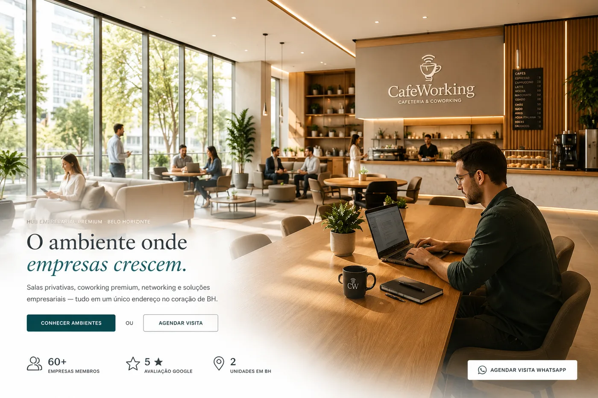
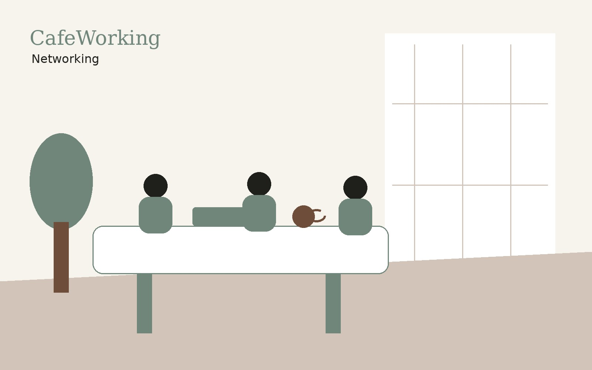

Empreendedores locais
Para quem quer operar uma unidade com marca, método e ecossistema.
Um modelo de hub empresarial premium que une ambientes de trabalho, cafeteria, endereço fiscal, soluções empresariais e networking em uma marca escalável.

O CafeWorking nasce como um ecossistema empresarial: o espaço físico é a porta de entrada para relacionamento, serviços e recorrência.
Salas privativas, coworking, reuniões, workshops e auditório.
Endereço fiscal, abertura de empresa, contabilidade e jurídico empresarial.
Apoio à experiência, permanência, relacionamento e percepção de valor.
Networking, eventos, cafés empresariais e conexões entre membros.
O modelo foi estruturado para ter identidade clara, operação replicável, presença digital, SEO local e possibilidade futura de plataforma multiunidade.

Empresários, investidores e operadores locais interessados em construir um hub empresarial em regiões com demanda por ambientes de trabalho premium.
Para quem quer operar uma unidade com marca, método e ecossistema.
Para transformar imóveis estratégicos em operação de recorrência.
Para quem já atua com serviços para empresas e quer ampliar aquisição de clientes.
Registre seu interesse e nossa equipe retornará para entender cidade, perfil e oportunidade.
Tenho interesse em franquia